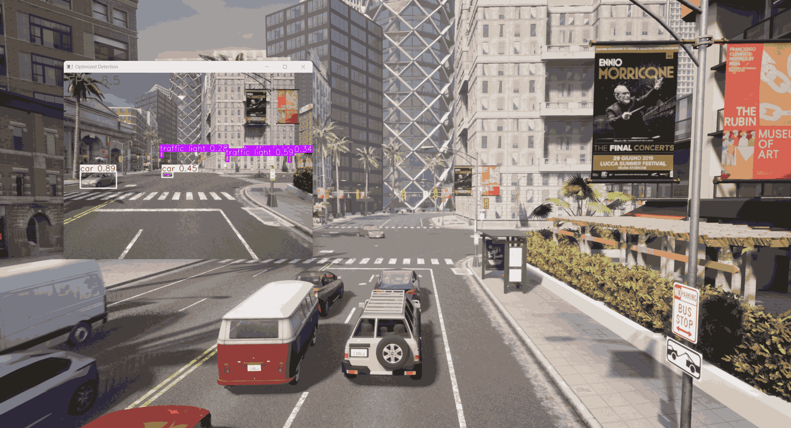
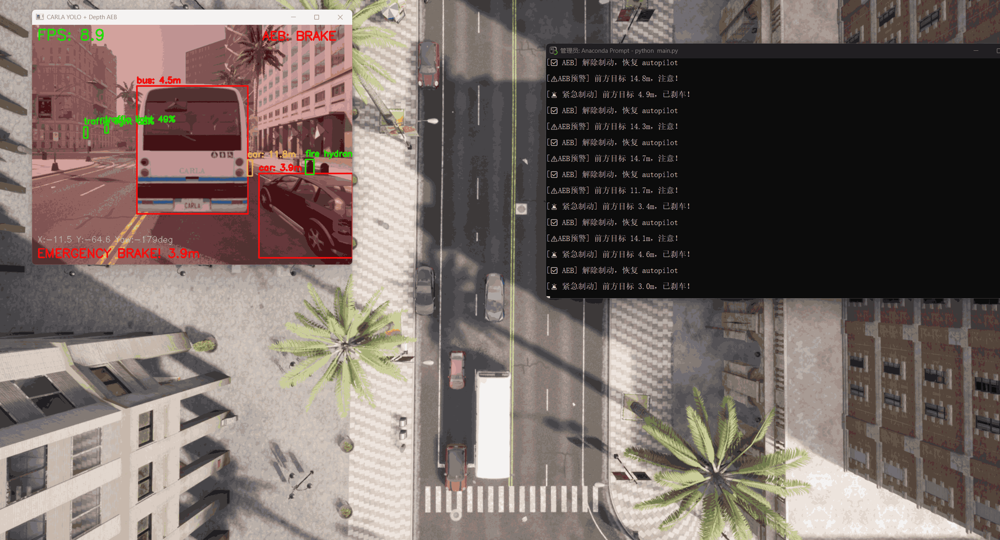

自动驾驶感知与控制系统研究 (基于 CARLA)
1. 项目简介
本项目旨在通过 Python 脚本与 CARLA 仿真环境进行深度交互，搭建一个基础的自动驾驶测试环境。项目将探索如何利用深度学习视觉算法和虚拟传感器数据，实现对仿真世界中动态物体的检测、环境感知以及基础的车辆控制。
2. 选题说明
- 参考开源项目: kamilkolo22/AutonomousVehicle
- 重构思路: 原项目部分模块对 Windows 系统兼容性较差，本项目提取其“视觉识别 + 传感器交互”的核心架构，在 Windows 环境下使用纯 Python 配合 PyTorch 进行完全重构，以确保跨平台的易用性和代码的可读性。
3. 开发运行环境
- 操作系统: Windows 10/11
- 仿真平台: HUTB CARLA_Mujoco_2.2.1
- 编程语言: Python 3.8
- 核心框架: PyTorch (支持 CUDA 加速), OpenCV
- 开发工具: Visual Studio Code / Anaconda
4. 模块结构与入口
- 本模块的所有核心代码存放于
src/carla_yolo_detection目录下。 - 模块的主程序入口为
main.py。
5.运行指南
步骤 1：启动 CARLA 模拟器
运行 CarlaUE4.exe，等待地图加载完毕。
步骤 2：配置 Python 环境
⚠️ 核心避坑：本项目基于 HUTB CARLA_Mujoco_2.2.1，必须先手动安装模拟器自带的
carla库，不能直接 pip install carla。
请在 Anaconda 环境（推荐 Python 3.8）中，依次执行以下命令：
- 安装底层 CARLA API (请将路径替换为你电脑上实际的
.whl路径)：
```bash pip install D:\hutb\hutb_car_mujoco_2.2.1\PythonAPI\carla\dist\hutb-2.9.16-cp38-cp38-win_amd64.whl
```
-
安装常规依赖库：
pip install -r src/carla_yolo_detection/requirements.txt -i [https://pypi.tuna.tsinghua.edu.cn/simple](https://pypi.tuna.tsinghua.edu.cn/simple) -
(可选) 开启 GPU 显卡加速： 如果你拥有 NVIDIA 显卡并希望获得 30+ 的流畅 FPS，请务必额外执行此命令覆盖安装 CUDA 版 Torch：
```bash pip install torch torchvision torchaudio --index-url https://download.pytorch.org/whl/cu118
```
步骤 3：运行程序
请在项目根目录下执行核心脚本：
python src/carla_yolo_detection/main.py
[第2次提交] carla_yolo_detection: 实时感知与背景车流系统
1. 模块功能
本模块实现了自动驾驶视觉感知的基础闭环：
- 实时物体检测: 集成 YOLOv5s 模型，实时识别 CARLA 环境中的车辆与行人。
- 背景交通流生成: 利用 Traffic Manager 自动随机部署 30 辆背景车，模拟动态路况。
- 异步推理架构: 优化了图像处理流程，通过回调截取最新帧，避免了深度学习推理导致的画面卡死，并支持实时 FPS 显示。
- 安全监听: 挂载碰撞传感器 (Collision Sensor)，实时在终端发出碰撞预警。
2. 运行效果

[第3次提交] 前向测距与 AEB 自动紧急制动系统
1. 功能说明
在感知系统的基础上，本版本引入了决策与控制模块，实现了车辆的主动安全防护，并大幅优化了仿真体验：
- 多传感器同步与测距：同步挂载 RGB 与 Depth 深度相机（统一 FOV 与 Transform）。利用 YOLO 提取目标框，映射至深度图取中值，实现了极具鲁棒性的抗噪前向测距。
- 三段式接管控制 (AEB)：
距离 > 15m (NORMAL)：安全状态，车辆交由 Autopilot 自主巡航。5m < 距离 <= 15m (WARN)：预警状态，终端提示注意前方目标。距离 <= 5m (BRAKE)：危险状态，系统强行覆盖 Autopilot，油门归零、刹车拉满 (brake=1.0)，画面闪烁红色警报覆层。危险解除后自动恢复 Autopilot。- 仿真环境深度优化 ：
- 自动垃圾回收：启动时自动销毁上次运行残留的车辆与传感器，杜绝幽灵碰撞。
- 视角自动追踪：初始化时自动将 CARLA 旁观者视角 (Spectator) 锁定至自车上方，告别手动找车的烦恼。
- HUD 增强显示：新增自车实时全局坐标 (X, Y, Yaw) 与 AEB 状态指示灯的屏幕渲染。
2. 运行效果展示

图：系统成功捕获前方小于5米的目标，瞬间夺取控制权触发 EMERGENCY BRAKE，并渲染红色全屏警报。